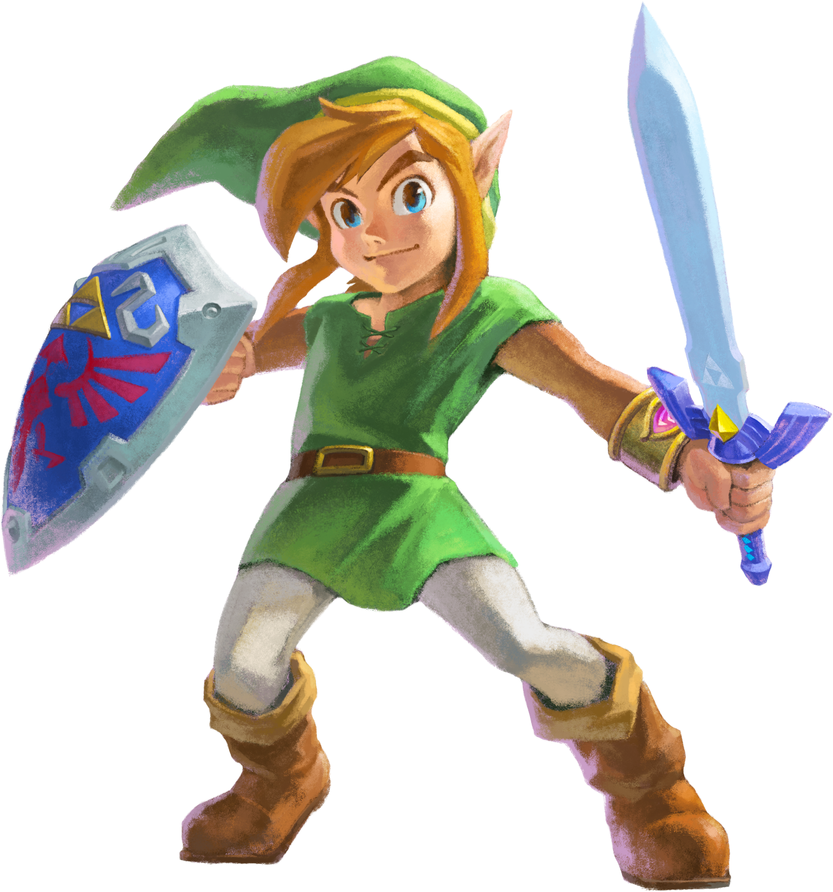
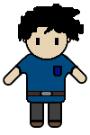
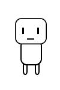
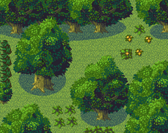
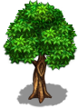
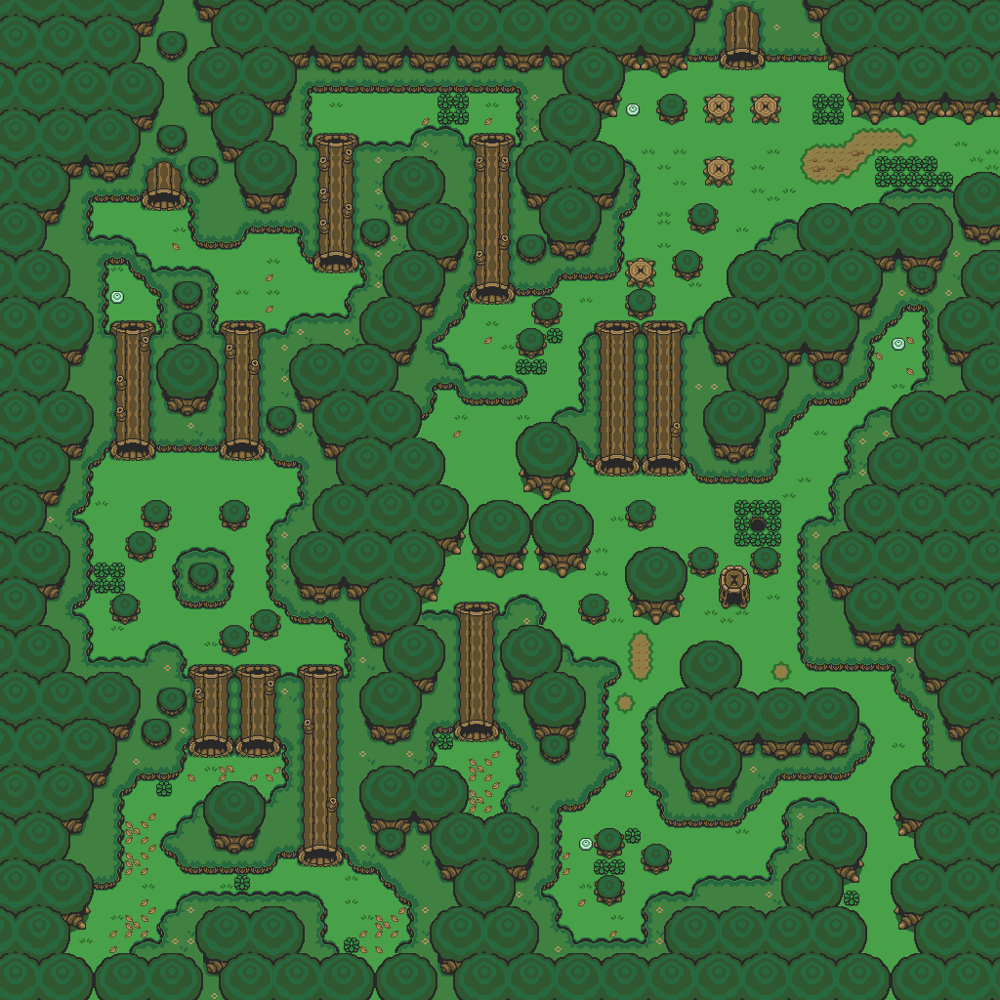
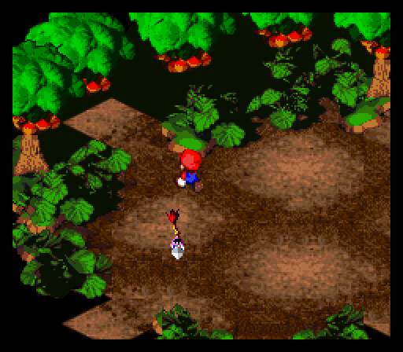

The influences I got when drawing my character were
Link from The Legend of Zelda series and the Explorer sprite which I used in the previous animation.
Link
Explorer (I used this sprite in the previous animation)
https://opengameart.org/content/zelda-like-tilesets-and-spritesThe final outcome was:
I also drew a outline for the basic proportions when I was drawing my character so it would not look too unnatural.
I followed these two videos on drawing sprites.
and getting them to look like they are moving.I also followed these videos for creating sprites that move to make them look like they are walking
https://www.youtube.com/watch?v=GUEVPYlv474I based my tree drawing on these two designs:
 I based my arrow off the arrows that appear in the Mario games
I based my game design feel on these games and ideas:
The Legend of Zelda - Lost Woods
This is an area in the Zelda games that I based my game on.
It is a large forest that is maze like and has many paths.
I also based my art style largely on this series art.
I also liked the Forest Maze from the Mario Rpg series
I designed my button actions on this where they lead to a new map.
I liked the art style and design of this game so I made my designs similar to this.
The angle and tree placement is somewhat based from here.
This game is from:
https://pixelcount-studios.itch.io/kynseed